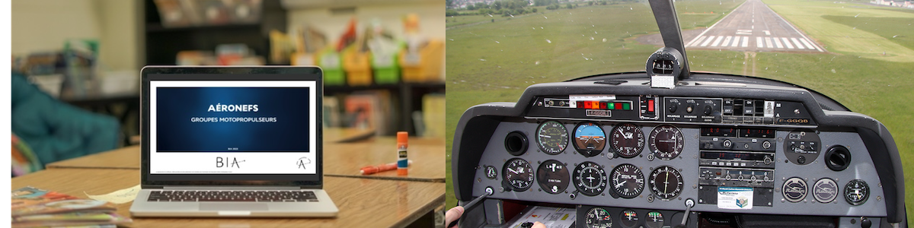

Les cours

Les cours sont donnés en visioconférences à partir du mois d’octobre jusqu’à la date de l’examen, suivant les périodes scolaires de la zone A (Paris). Durant les vacances scolaires des cours de révisions peuvent être proposés.
Créneau du mercredi
De 17h30 à 19h30
Créneau du samedi
De 10h à 12h